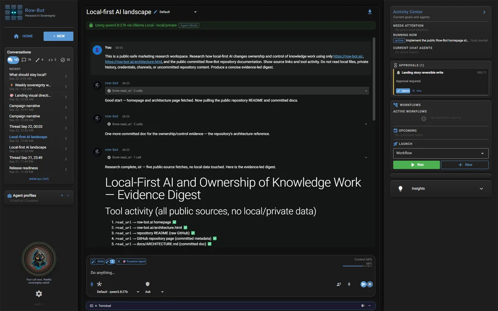
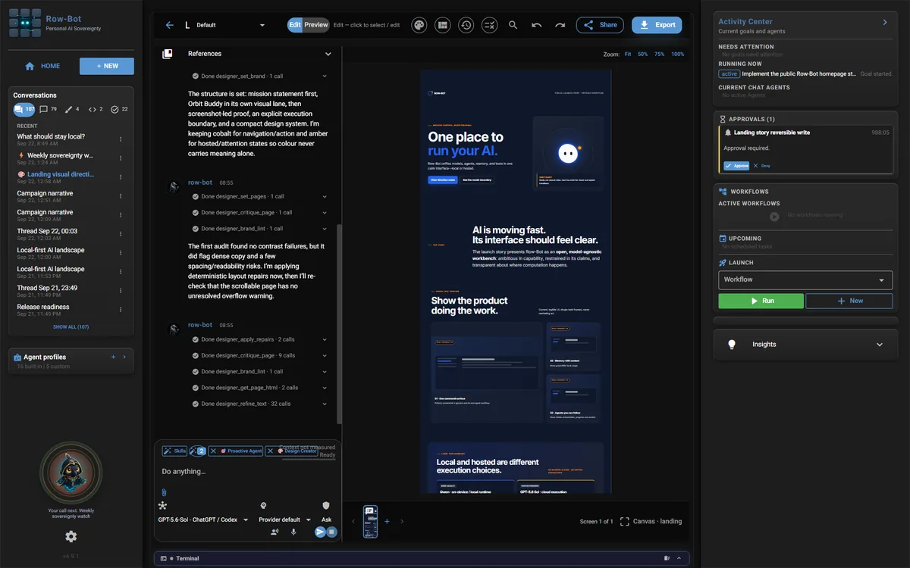
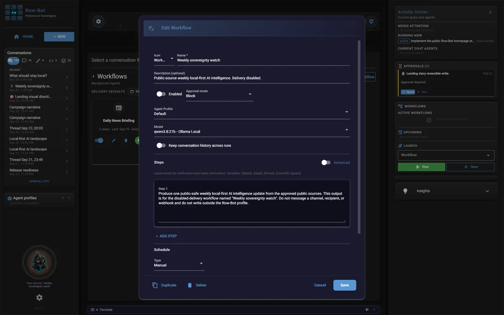
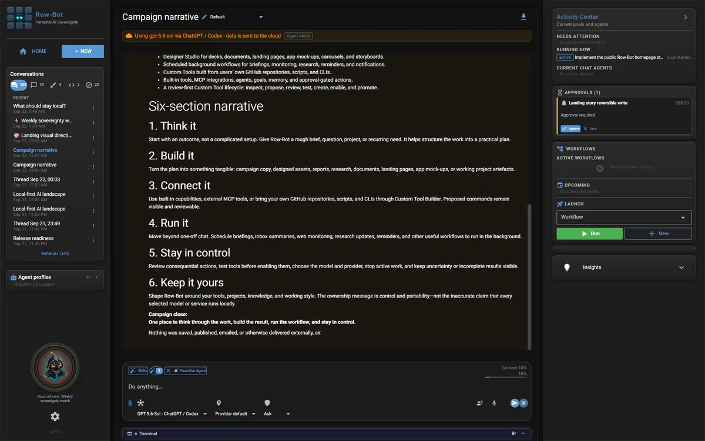

01 · Research · Local
Start with evidence.
Qwen researches approved public sources, keeps the source trail visible, and turns findings into durable local knowledge.
model:ollama:qwen3.8:27b
One local-first AI workbench
Research, create, automate, and stay in control across agents, models, tools, memory, documents, workflows, code, design, messaging, and voice.
Free · open source · no Row-Bot account
Orbit is ready.
One real task, end to end
Move across the workbench without losing context. Every frame below comes from the real product and a public-safe workspace.
01 · Research · Local
Qwen researches approved public sources, keeps the source trail visible, and turns findings into durable local knowledge.
model:ollama:qwen3.8:27b
02 · Create · Explicit handoff
Row-Bot hands the public-safe brief to Sol for final campaign synthesis and Designer direction. The hosted boundary stays labelled.
model:codex:gpt-5.6-sol
03 · Automate · Local
A disabled-delivery workflow runs the same public intelligence task locally and keeps its history available for review.
model:ollama:qwen3.8:27b
04 · Control · Approval
Consequential writes and external delivery remain reviewable. Row-Bot asks; you decide.
Approval required · reversible write
One connected workspace
A visible context meter and rolling compaction keep long conversations manageable. Enabled external capabilities can be discovered only when needed.
Everything meets in one local system of record.
Real product demonstrations
Three complete tasks in the real product, loaded through privacy-enhanced video facades only after you choose to play.
Local-first by architecture
Conversations, knowledge, projects, workflows, and approvals live with the Row-Bot host. Local models stay local. Hosted providers receive only the context for requests you explicitly route to them.
Row-Bot keeps durable system state locally, makes model routes explicit, and places approvals before consequential actions. Hosted providers still receive the context required for requests you send to them.
Before you install
Local records, explicit providers, and reviewable actions.
Yes. Row-Bot is Apache 2.0 licensed and does not require a Row-Bot subscription. Hosted providers and external services may have their own charges.
Yes, when you select a local runtime and local tools. Hosted models, cloud embeddings, web tools, online channels, and remote access require network connections and remain opt-in.
The selected provider receives the current model-visible context needed for that request. Durable conversations, knowledge, profiles, goals, and project records stay on your machine unless you deliberately send data through a provider or networked tool.
Yes. An authenticated browser can open Row-Bot from a route you choose. Every invited browser has owner authority, and the host must remain running. It is not a standalone iOS or Android download.
Continue on desktop
Row-Bot runs on Windows, macOS, and Linux. Open row-bot.ai on your computer to install it.